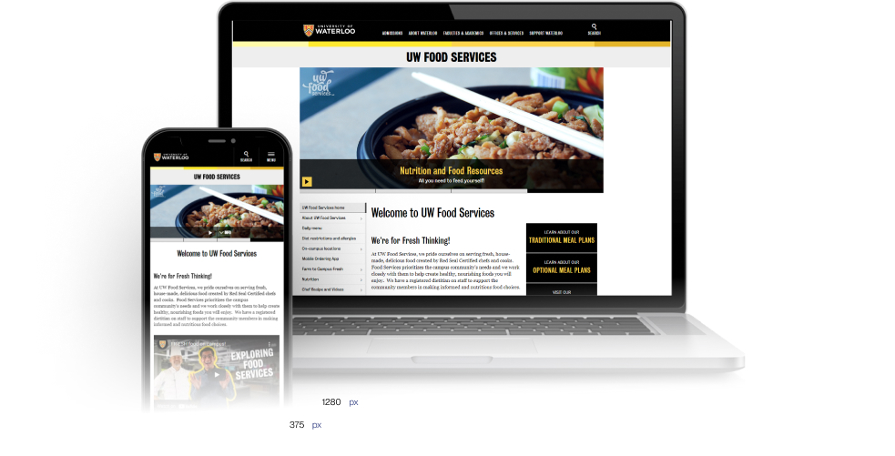
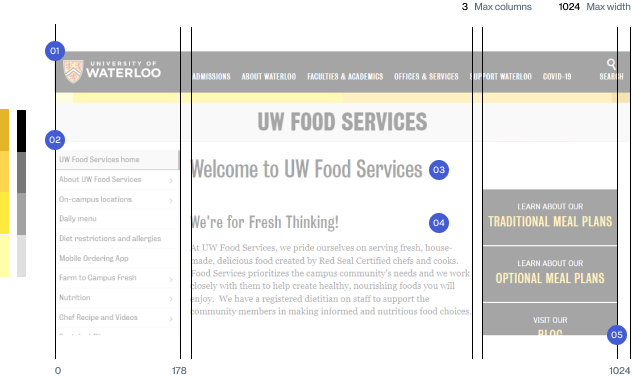
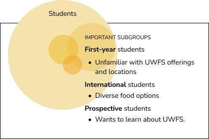
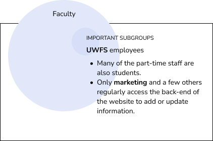
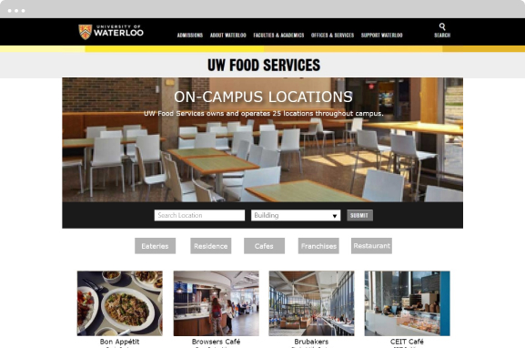

University of Waterloo Food Services
web design • 16-week design internship
Organizing a complex information architecture to improve the web experience.
Our organization was in the midst of a major shift from print-based media to digital; a website revamp would help us increase online engagement and communication. To me this meant working with what already exists and giving it new life and a stronger voice.
How do we redesign our current website to give users a better experience and align with our three core values of customer, convenience, and choice?
YEAR
Fall 2018
TEAM
Vivian Liu
Amanda Liebeck
Rachael Henderson
ROLE
UX/UI
Product Strategy
Web Design
Prototyping
Exploration
What is UWFS?
University of Waterloo Food Services (UWFS) is an ancillary service of the university providing foods and drinks to the campus community. On top of supporting over 70 local farmers, UWFS strives to promote a healthy, sustainable university environment. We based most of our research and design on our three key values of:
- Developing trust with our customers.
- Delivering products as conveniently as possible.
- Providing a wide range of options to meet everyone’s needs.
We are also passionate about the UN Sustainable Development Goals, specifically Good Health and Wellbeing, and tried to reflect this in our digital space.
Furthermore, we wanted to promote several key avenues UWFS provides value to our customers. This includes meal plan offerings, nutritional and wellness programs, and frequent initiatives/events supporting student life, diversity and culture.

A menu that I designed for a breakfast promotion.
The Problem
Our website contains a wealth of information, but the lack of organization and navigation made for a poor experience. Internal staff also remarked that some key pages could not fit important dietary and nutritional information. We were also limited in our creative options as the new design needed to align with the university's style and branding guidelines for web.
While UWFS operates in-person in eateries on-campus, an online presence allows our customers to learn about products and services on their own devices. Compared to other Canadian universities, we realized our site wasn’t generating enough engagement to serve its purpose.
We chose three high-priority, high-traffic pages to focus our exploration in terms of improving organization and performance.
home page
01
The home page wasn’t captivating, the messy navigation system doesn’t inspire users to explore, and the composition lacked a clear visual flow.
02
Many of the buttons and links were broken or rarely used, which can be frustrating to a new user.
03
The mission statements hold valuable real estate but weren’t very engaging to students.
weekly menu
01
To browse a different menu, users must cycle through each week using “Previous” and “Next” hyperlinks.
02
The table layout was difficult to read, especially for items on the menu with longer names.
Mobile users needed to scroll left to right to see the entire table.
The lack of space was also a challenge for internal staff and many menu items had to be left off the list to maintain its presentability.
03
Not enough space in each grid to put important dietary information such as vegan, halal, and gluten-free options.
locations & hours
01
The link to the student portal app was broken and the line-up feature was no longer supported. We decided to remove this altogether.
02
There was almost no traffic to our social media via this link, so we moved it to the home page for better visibility and included a full embed feature.
03
Redirect links for each individual eatery created unnecessary clicking and was long to navigate back and forth.
Users couldn't compare the hours of different eateries, such as the three Tim Hortons locations, since they needed to open each of the three separate links.
Gathering Requirements
Organizing a complex information hierarchy
In our initial investigation, we found that users struggled to navigate the complex hierarchy of information on the website. Our team often received questions from students where the answers they seek were already available on the website but they didn’t know how to find it. However, with so much information to display, restructuring the website to improve organization and navigation proved to be more difficult than anticipated.
my approach
I proposed reorganizing the page layouts to present information on-demand instead of all at once, increasing visibility of high-priority information and moving low-priority information to subpages. Through intuition and extensive user research we identified which information to hide and which to emphasize so that the key sections can speak more clearly.
Creativity within strict design limitations and guidelines
As an ancillary organization of the university, our site must align with the university’s branding and style guidelines, and be feasible to implement into the university’s CMS web framework.
my approach
I attended several optional courses to learn the foundations of this web framework to understand what is technologically feasible before diving into designing a new face and fresh new features. Because of my initiative I was also able to implement some simple but high priority changes such as removing the broken links and adding a social media embed.
The university’s web framework on which our site is built supports only specific template layouts and includes certain static elements consistent across every page. The grid supports a maximum of 3 columns, and the left sidebar (2) is fixed to its location. The colour scheme and typography are also fixed.
Custom pages are available upon request if we can demonstrate its necessity, but it is preferred to work within the traditional framework to save on time and cost.

01
Main Header: style and links are fixed across all of the university's webpages
02
Navigation Menu
03
Title
04
Body & Content: one thing I noted was the amount of navigation on each page, users are more likely to read the heavier-weighted titles and click off than look through the body content
05
Optional Sidebar
Now that we have defined all the requirements and boundaries for this project, we can start researching and creating feasible design solutions.
This project taught me to break down the problem and question my assumptions to create better design solutions. The task may seem simple but underneath the iceberg there are many complex layers of branding, structure, and user flows to consider.
Research
We conducted 3 main research methods to better understand our users and how they are currently interacting with our website:
- Student Focus Group: Every semester the marketing department hosts a student focus group called the “Food Advisory Board”. We discussed with the group how students may use our website to find relevant information and collected valuable feedback.
- User Interviews: We led several interviews with students and staff members who regularly interacted with our website to collect data on what tasks they are responsible for and any inconveniences they may encounter.
- Intercept Surveys: Our website has an anonymous intercept survey where users can submit feedback, concerns, and complaints. We collected the responses of this survey over the past year to analyze common problems users were facing.
We found the major issues were all related to the way information was collected and presented. We also identified several key user archetypes to center our design solutions:
who are the users?



current user personas & journeys


Pain Points
Our research suggested the main frustration for users was a poor visual layout and confusing navigation. Many people stated they often clicked away from the site before finding the information they need because it was frustrating to navigate. They felt overwhelmed with the amount of information presented to them and had to click multiple links to find what they were looking for. The whole process was also visually distracting as pages were too cluttered with text and links.
We identified 3 high-level criteria for this project that addressed our users’ pain points:
- Create an efficient, seamless experience for users to efficiently find relevant information.
- Improve discoverability of important information such as new products, initiatives, and events that are key to delivering the UWFS values.
- Create a system that is easy to use and navigate.
Information Architecture

First analysis and feedback
Next, we reviewed each targeted pages using our 3 design criteria with consideration for the key touchpoints in our users journeys.
We analyzed how to simplify the current information architecture to reduce distracting noises and improve each user's journey.
key user tasks
01
Exploring the home/landing page
02
Finding information about individual eateries
03
Checking the rotational menu
04
Contact UWFS
05
Discovery and promotion
06
Other

Second analysis and feedback
I re-organized the key components into clear categories based on the main user tasks, removed broken or irrelevant links, and condensed the navigation.
Design
Home Page
The homepage reflects our commitment to customers, convenience, and choice. It is the foundation of the website, connecting all the other pages and encourages users to explore.

Landing Page
The new hero banner showcases featured events, important links, and new products. The larger hero image becomes the focal point of the page and the YouTube video was shifted downwards to create a flow that better fits the user journey:
Hero Banner, Navigation, Page Content
original home page

new home page
UWFS plays an important role in student life, we want to be as transparent as possible to foster an environment of trust and care.
Social Media
Twitter and Instagram are the primary social media channels where many updates and events are communicated to students. New icons and an integrated web element were added to the home page to increase visibility of our these accounts.

Home Away from Home
We also created profile pages to put a face to the hardworking, dedicated UWFS chefs working in our many eateries.


Daily Menu
The new daily menu lets individual products speak more clearly with an improved list layout and nutrition filters.

Efficiency & Convenience
Several UI elements were designed into the new menu to help guide users to relevant information.

Vertical Layout
Compared to the original weekly menu, the new cascading list-style menu provides a lot more space to add items and includes important dietary information that users may depend on when picking meals.
Since most students indicated they either don't use the online menu, or will check the menu on a day to day basis, we thought it would naturally make more sense to display the menu per day instead of per week. While this would mean users can no longer quickly view the entire weekly menu at once, they can use the new calendar navigation to select whichever date they are interested in, leading to better flexibility.
original daily menu

new daily menu
This new layout is also mobile friendly as it would scale vertically rather than horizontally. This makes it easier for users to navigate the menu on-the-go, on their smartphones.

Locations & Hours
Designed for a quick check of the hours of operation and a map of all the locations. Mostly used by returning students who are familiar with UWFS eateries. New students can still benefit from the map to find a nearby eateries.
Condensed Information
Most users only use this page to search for what’s nearby and their operating hours so we moved most of the eateries’ details such as the features and payment options to a separate “On-Campus Locations” page.
This let us remove the original hyperlinks that linked to each eatery and create a cascading table that is much faster to use and reduces the number of clicks for users to complete their task.
On-Campus Locations
A dynamic feature of the website showcasing each eatery. The goal is for new users to browse individual locations and find new products of interest.
Search and filter options lets users look up specific locations or buildings. Eateries also include detailed information such as menus and contact information of the location manager.

Eatery Features
A new design system to showcase each of our many locations.
01
Adding an image gives each location more visual identity than just a logo and grabs the user’s attention.
02
Most detailed information (payment options, franchise details, contact) are hidden.
03
Added icons to represent commonly accessed information (menu, location, hours of operation).
04
While users can click the entire card to see detailed information, having a “More Information” button accommodates for people with special needs.
before
after
Reflections
How did people respond?
The response to the new design was very positive and I was able to deploy some key elements such as switching the menu layout from a table to a list and reorganizing information on the home page. This was greatly beneficial to the internal staff at UWFS as they were no longer restricted by the tight constraints of the table, and the layout looked much better for mobile users.
Mistakes I made and areas of improvement
I’ve learned a lot from this project in terms of both personal and professional development. One of my key takeaways was to always test the design. I rushed through the latter half of the project and didn’t have enough time to thoroughly test the design. There are a few features that I believe could be further improved such as the layout of the Locations & Hours page. If I could go back, I would take my low fidelity wireframes and run them through usability tests to collect valuable data on how my design performs in a semi-practical setting, before moving on to the next step of the design process.
What’s next?
- Usability testing on the new On-Campus Locations page to see if users understand the interface and collect feedback on the visual design.
- Further iterative improvements on the larger-scale designs with consideration for UWFS staff and what the back-end integrations would look like (translating information from our database to the webpage.
In the beginning. we explored many different design layouts before landing on the current prototype. With more time, I would test the current iteration to determine areas of improvement and further iterate the design but this was as far as I was able to get within my 4-month internship period. The remainder will be passed onto the next design intern.
To help with the transition I was able to document and package everything I worked on including the wireframes, assets, prototypes, and a short blurb on my thought process. I was fortunate to be able to discuss the internal code structure of the website and the technological feasibilities with our in-house developer and business development manager throughout my design process. Our collaboration resulted in a much more fluent hand-off process.
Final thoughts
This project was challenging but altogether I am very happy to have been given the opportunity to put pen to paper and take on this great responsibility. I am grateful to my manager Amanda for her trust, guidance, and criticism throughout my four month internship, and Rachael, for her help deciphering the complex inner workings of the website in order to better tailor our design solution to the needs of the UWFS staff.
get in touch
vivian.liu67@gmail.com
COPIED!